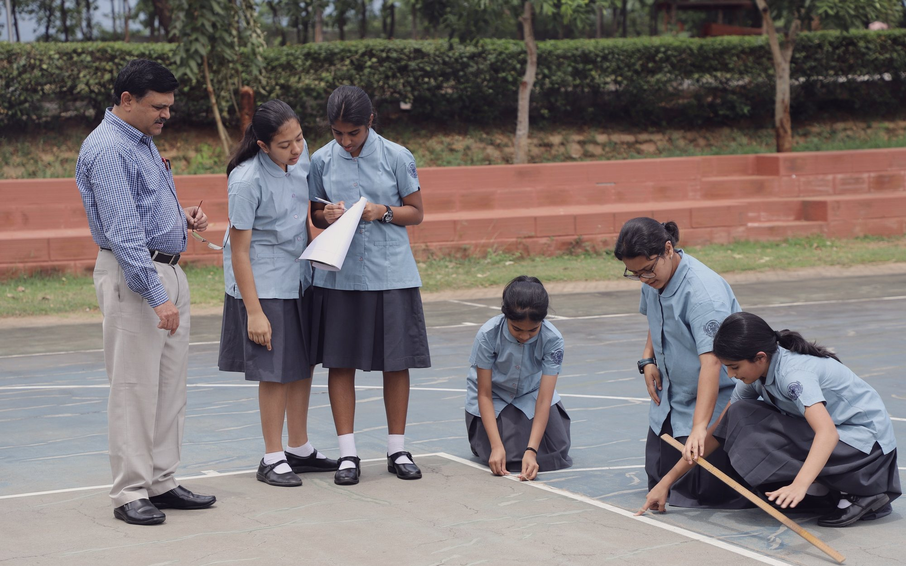

About CIRS
Why CIRS.
A community of knowledge, service and skill in the Siruvani foothills — and the two schools, Junior and Senior, that carry it.
A community of knowledge, service and skill
We Are CIRS.
Set in the Siruvani foothills outside Coimbatore, on a hundred-acre campus with eighty acres left to forest, CIRS has offered CBSE and the IB Diploma side by side since 1996, each taught by teachers trained in that curriculum — shaping boarders from twenty-four Indian states and twenty countries into disciplined, compassionate learners.
“The future of our world rests upon the quality of its youth. Quality comes through care and attention.”
Chinmaya International Residential School was founded on 6 June 1996 by Swami Chinmayananda, opening with ninety-six students. It is an undertaking of the Central Chinmaya Mission Trust, and the motto above is taught as a daily practice rather than displayed as a crest.
Roughly eighty of the campus’s hundred acres have been left to native flora and fauna — a decision that cost the school buildable land and earned it the Green School Award from the Centre for Science and Environment, New Delhi.
Boarding is the part of the education that is not timetabled. Houses carry the names of India’s great teachers, and seniors and juniors share corridors by design, so mentoring is structural rather than extracurricular.
- Founded
- 6 June 1996
- Founder
- Swami Chinmayananda
- Chairperson
- Swami Swaroopananda
- Grades
- V to XII
- Curricula
- CBSE & IB Diploma
- Medium
- English
- Campus
- 100 acres
- Left as forest
- c. 80 acres
- Indian states
- 24
- Countries
- 20
- Students today
- 580+
- Recognition
- Green School Award

Why CIRS
Discover the difference
A School That Knows Your Child.
Boarders arrive from twenty-four Indian states and twenty countries and share a single dining hall, a single timetable and a single set of house rosters. Difference is not a programme here — it is the corridor.
to be supplied
Junior School
Build a bright beginning
Where Curiosity Gets Its First Push.
The junior years at CIRS begin in Grade V, introducing boarding life, house mentorship, and a broad first exposure to music, sport and the sciences alongside the CBSE curriculum. Value education runs alongside the timetable from Bal Bhagavatam onward.
[Placeholder — junior-school-specific programme detail to be supplied by the school.]
to be supplied
Senior School
Choose your pathway
Two Boards, One Ambition.
From Grade XI, CIRS students declare a direction — CBSE’s Engineering, Medicine or Management streams, or the IB Diploma, where every teacher is IB-trained and several serve as IB examiners.
The Diploma runs across six subject groups, three or four of them at Higher Level, anchored by the Extended Essay, Theory of Knowledge and CAS — recognised by universities in India and worldwide.
Under construction
This page is still being written. Photographs, names and figures marked in brackets are placeholders awaiting the school, and more will be added here in the weeks ahead. Tell us what is missing.